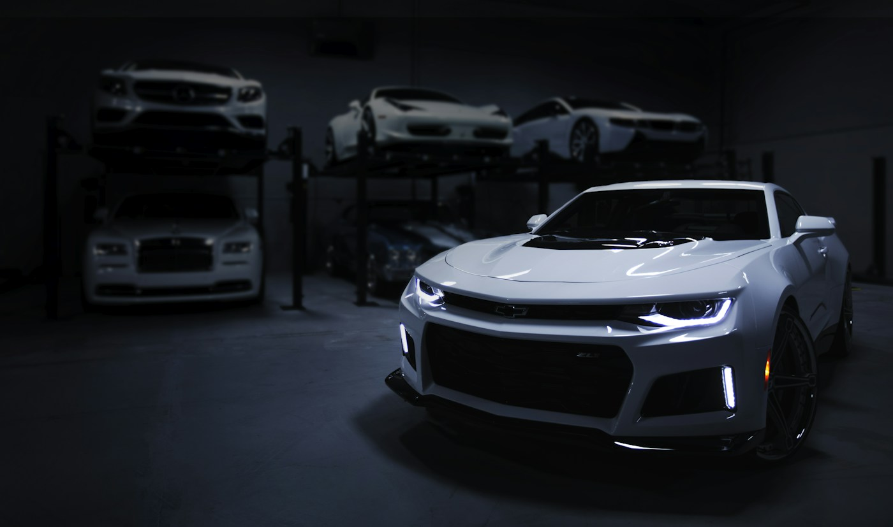

Lavagem & higienização
Lavagem detalhada e higienização interna para o cuidado do veículo.
Explorar atendimentoESTÚDIO AUTOMOTIVO · MOGI DAS CRUZES
Da lavagem detalhada à proteção da pintura. Explore os cuidados da Perfect para a aparência e preservação do seu veículo.
Planejar meu atendimentoUma experiência digital pensada para a sua marca.

Serviços divulgados pela Perfect em matéria do Portal News. Consulte condições e disponibilidade diretamente com a equipe.
Lavagem detalhada e higienização interna para o cuidado do veículo.
Explorar atendimentoEnceramento técnico, cristalização e polimento de faróis e vidros.
Explorar atendimentoVitrificação e aplicação de insulfilme mediante avaliação.
Explorar atendimentoValor e prazo dependem do serviço e da avaliação do veículo. Endereço e serviços conforme divulgação de março de 2025, a confirmar com a empresa.
DO PRIMEIRO CLIQUE AO ATENDIMENTO
Escolha o cuidado e uma data desejada. A avaliação e a disponibilidade precisam ser confirmadas pela equipe.
Use dados fictícios. Nenhuma informação será enviada ou salva em servidor. Datas e horários não representam disponibilidade real.
PERTO DE VOCÊ
Av. Henrique Péres, 65 · Vila Bernadotti · Mogi das Cruzes
Instagram da Perfect